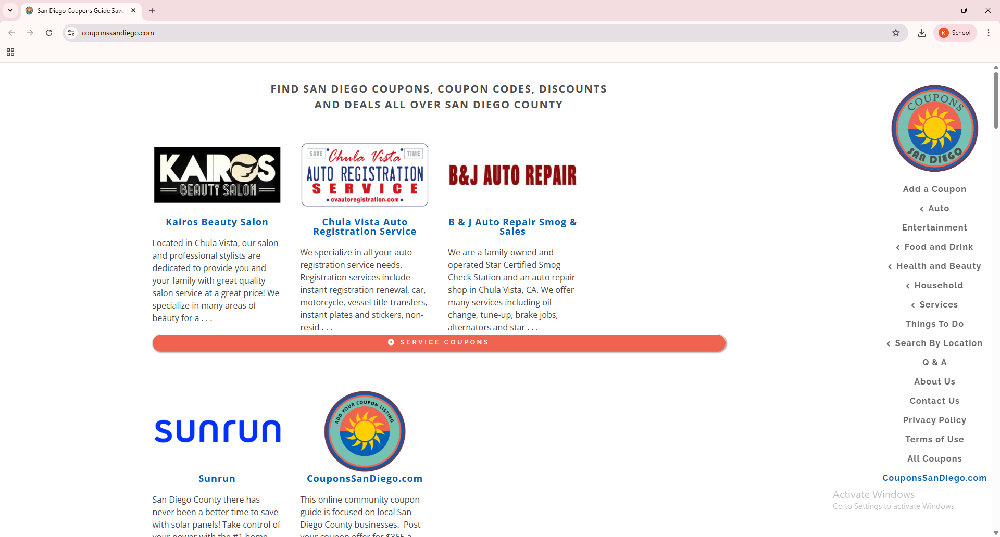

Ugliest UI example: CouponsSanDiego
Source site: couponssandiego.com
Screenshot
Why this UI looks bad
- Visual clutter — duplicated navigation and repeated headings, inconsistent hierarchy.
- Poor spacing and alignment — elements are cramped and repeated, making scanning hard.
- Accessibility issues — small contrast, cluttered links, many ARIA/semantic improvements needed.
- Outdated styling — default fonts and unrefined layout give an untrustworthy impression.
What I would do to improve it
- Rebuild the information architecture: simplify menu, remove duplicate blocks, and create clear content hierarchy.
- Improve typography: choose a readable font stack, scale headings properly, increase line-height.
- Whitespace & layout: introduce a grid system / CSS variables for consistent spacing and responsive design.
- Accessibility: add semantic headings, alt text, keyboard navigation, and ensure color contrast meets WCAG AA.
- Modernize visuals: consistent color palette, nicer CTA buttons, and a responsive mobile-first approach.
- Performance & SEO: compress images, add meta tags, and organize content for crawlers.